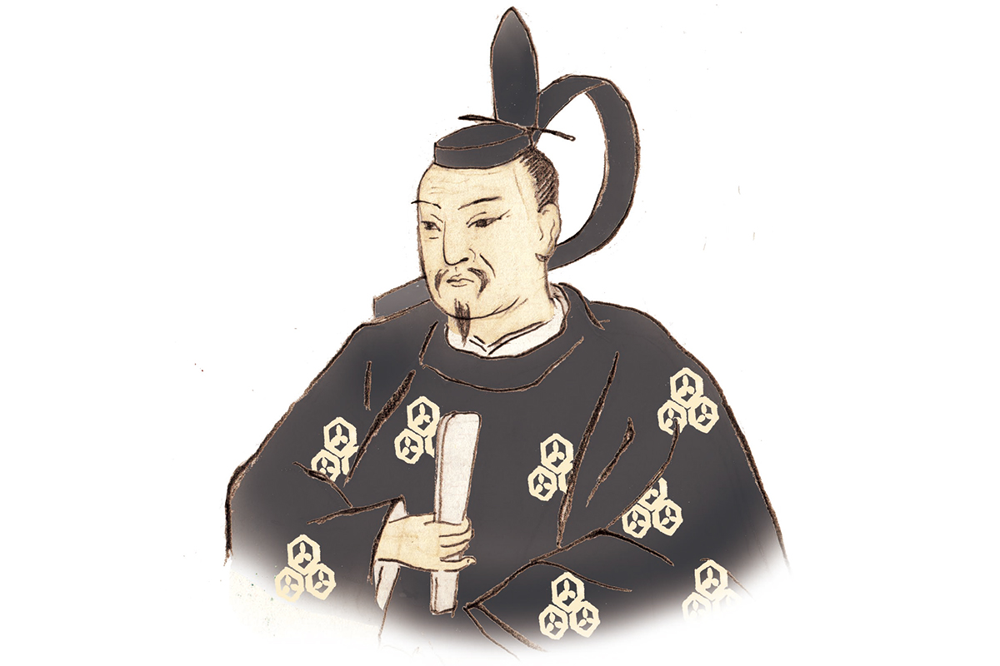
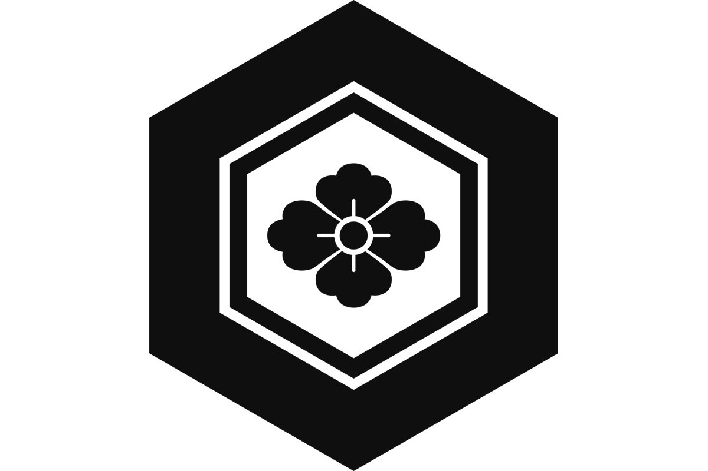

Префектура Ниигата · Нагаока и Минамиуонума · история
Канэцугу Наоэ: самурай из Этиго с иероглифом «любовь» на шлеме

Шлем с крупным иероглифом «ай», то есть «любовь», сделал Канэцугу Наоэ одним из самых узнаваемых самураев эпохи воюющих провинций. Но за ним стоит не только воин, но и бережливый хозяин, который спас казну своих князей.
Эпоха
Век войн и его герои
С конца XV до конца XVI века Япония жила в постоянной войне. Власть сёгунов из дома Асикага окончательно рухнула, и по всей стране усилились местные князья, даймё, которые сами решали, с кем воевать и с кем дружить. Этот век называют эпохой воюющих провинций, и многие её полководцы до сих пор остаются в Японии легендарными героями.
К числу самых любимых относится Канэцугу Наоэ (1560–1620). Он родился в провинции Этиго, на землях нынешней префектуры Ниигата, в семье Хигути, а в детстве его звали Ёроку. Всю жизнь он служил роду Уэсуги, и прежде всего Кагэкацу Уэсуги (1556–1623), приёмному сыну и наследнику Кэнсина Уэсуги (1530–1578), легендарного полководца, которого называли «богом войны».
Человек
Советник, который не бросал своих
Широкая слава пришла к Канэцугу, когда исторический сериал NHK сделал его своим главным героем. Настоящий Канэцугу был не столько рубакой, сколько человеком, которому пришлось нелегко. Он стал главным советником, каро, при князьях Уэсуги, правивших в Ёнэдзаве, и вытащил их казну из долгов.
Он был мягок с людьми и считал, что княжество держится прежде всего на людях. Говорят, даже в самые трудные времена он не прогнал ни одного вассала. Сам он жил скромно, а чтобы прокормить служивых, поднимал земледелие.

Канэцугу знали и как образцового мужа. Его жена О-Сэн была дочерью прежнего главы рода Наоэ, и Канэцугу вошёл в её семью приёмным зятем. Супруги прожили в согласии всю жизнь, и, что редкость для того времени, наложниц у него не было ни одной.
Шлем
Почему «любовь»
Главный символ Канэцугу, шлем, украшает иероглиф «ай». Этот знак обычно читают как «любовь», но к любви он, судя по всему, отношения не имеет. Считается, что знак взят из названия святилища Атаго, где Канэцугу молился о победе над двумя сильными соседями: Сингэном Такэдой (1521–1573), властителем провинции Каи, и Удзимасой Ходзё (1538–1590), главой рода, правившего восточными землями.
Его гордость хорошо видна в одной истории. Однажды Масамунэ Датэ (1567–1636), могущественный князь с севера Японии, пустил по кругу среди гостей большую золотую монету. Канэцугу не стал брать её в руки. Масамунэ решил, что тот стесняется, и разрешил: можно и потрогать. Канэцугу ответил:
«Правая рука недостойного Канэцугу держит на поле боя жезл военачальника»
Канэцугу Наоэ, ответ Масамунэ Датэ
Хроника
Жизнь Канэцугу Наоэ
- 1560. Родился в провинции Этиго.
- 1564. Стал пажом при юном Кагэкацу Уэсуги.
- 1578. После смерти Кэнсина Уэсуги его приёмные сыновья начали войну за наследство. Канэцугу вместе с отцом встал на сторону Кагэкацу, и тот победил.
- 1581. По приказу Кагэкацу женился на О-Сэн, дочери рода Наоэ, принял фамилию Наоэ и стал хозяином замка Ёита.
- 1586. Получил придворный ранг и в том же году подавил мятеж одного из вассалов Уэсуги.
- 1588. Хидэёси Тоётоми (1537–1598), объединитель Японии, пожаловал ему родовое имя Тоётоми.
- 1598. Род Уэсуги перевели в Айдзу, и Канэцугу получил в управление Ёнэдзаву.
- 1600. Битва за замок Хасэдо, которую называют «Сэкигахарой Северо-Востока».
- 1614. В зимней осаде Осаки воевал на стороне Токугавы.
- 1620. Умер от болезни в Эдо. По японскому календарю это ещё конец 1619 года.
Где увидеть
По следам Канэцугу в Ниигате
Замок Ёита, которым правил Канэцугу, стоял в бывшем городке Ёита, сегодня это часть города Нагаока. Здесь работает «Музей Канэцугу и О-Сэн», он же музей истории и быта Ёиты. У входа стоит бронзовая статуя Канэцугу, а главный экспонат, копию его доспехов со шлемом «ай», можно обойти и рассмотреть со всех сторон. Есть зал о сериале «Тэнтидзин», а в одном из уголков доспехи можно примерить. Ещё в музее хранят реликвии князей Ёиты, старинные документы и утварь.
«Музей Канэцугу и О-Сэн» (музей истории и быта Ёиты)
- Адрес
- префектура Ниигата, Нагаока, Ёита-мати, Ёита-оцу, 4356
- Телефон
- +81 258-72-2021
- Часы работы
- 9:00–17:00
- Выходные
- понедельник, с 28 декабря по 4 января
- Цены / Вход
- взрослые 300 иен, дети 150 иен
Детство Канэцугу прошло в Минамиуонуме, на юге префектуры. Он родился у подножия горы Сакадо, где стоял замок Сакадо, родовое гнездо семьи Кагэкацу. С Кагэкацу, сыном тогдашнего хозяина замка, Канэцугу связали отношения глубокого доверия. От замка остались валы, рвы и площадки на склонах, это исторический памятник государственного значения. С вершины видны горы на границе Этиго и вся котловина Уонума, а весной склоны покрываются цветущими кандыками.
Гора Сакадо и руины замка Сакадо
- Адрес
- префектура Ниигата, Минамиуонума, гора Сакадо
- Телефон
- +81 25-788-1703 (туристическая ассоциация Муйкамати)
- Цены / Вход
- бесплатно
Неподалёку стоит храм Унтоан. По преданию, именно здесь в детстве учились Кагэкацу и Канэцугу, и учителем им был десятый настоятель храма.
Храм Унтоан
- Адрес
- префектура Ниигата, Минамиуонума, Унто, 660
- Телефон
- +81 25-782-0520
- Часы работы
- с апреля по ноябрь 9:00–17:00, с декабря по март 9:30–16:00 (вход до 30 минут до закрытия)
- Выходные
- среда (кроме праздников и новогодних дней)
- Цены / Вход
- взрослые 500 иен, школьники 200 иен
Фото: Мария Араи (иллюстрация).